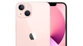

The iPhone 14 Pro Max was released on September 16, 2022.
What colors are available for the iPhone 14 Pro Max? The iPhone 14 Pro Max is available in 4 colors: Space Black, Silver, Gold, and Deep Purple.
What are the storage options for the iPhone 14 Pro Max?
iphone 13 pro max

The iPhone 13 Pro Max is available to buy right now, starting at $1,099 for 128GB of storage.
Going up to 256GB costs $1,199, 512GB is $1,399 and the whopping 1TB option is priced at a gulp-inducing $1,599.
The two available models of the iPhone 13 have different prices that change depending on the amount of storage.
Pricing for each model starts at: iPhone 13 Mini: $599. iPhone 13: $699.
iphone 12 promax
The price of the iPhone 12 Pro Max depends on the storage size you choose:
128 GB, 256 GB, 512 GB, or 1 TB, as well as the sim slots:
single sim or dual sim.
iphone 11 pro max
Starting with size, the iPhone 11 screen measures 6.1 inches (the same as the Phone 12 and 13).
The iPhone 11 Pro is slightly smaller at 5.8 inches, and the iPhone 11 Pro Max measures 6.5 inches.
As a result of its larger display size and larger Aspect Ratio, the iPhone 11 Pro Max has a 2.7K High Resolution Full HD+ display with 2688x1242 pixels and 458 pixels per inch,
with 3.3 Mega Pixels, 61% more than an HDTV.
iphone x
The iPhone X was the phone to get when it debuted in 2017,
and there are many reasons why you might still want to pick one up today.